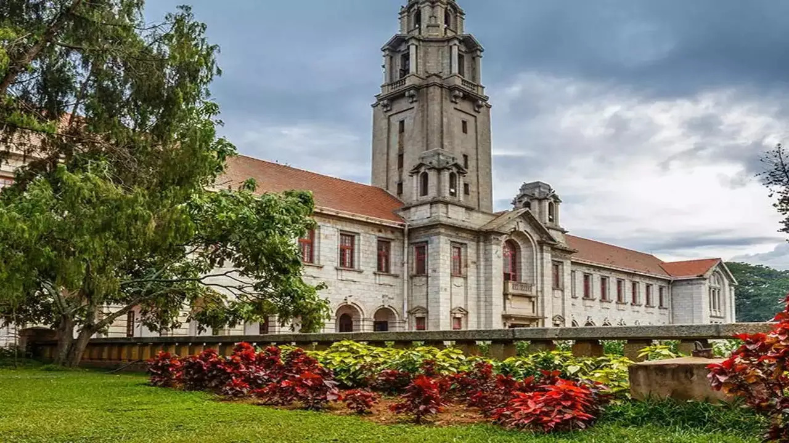
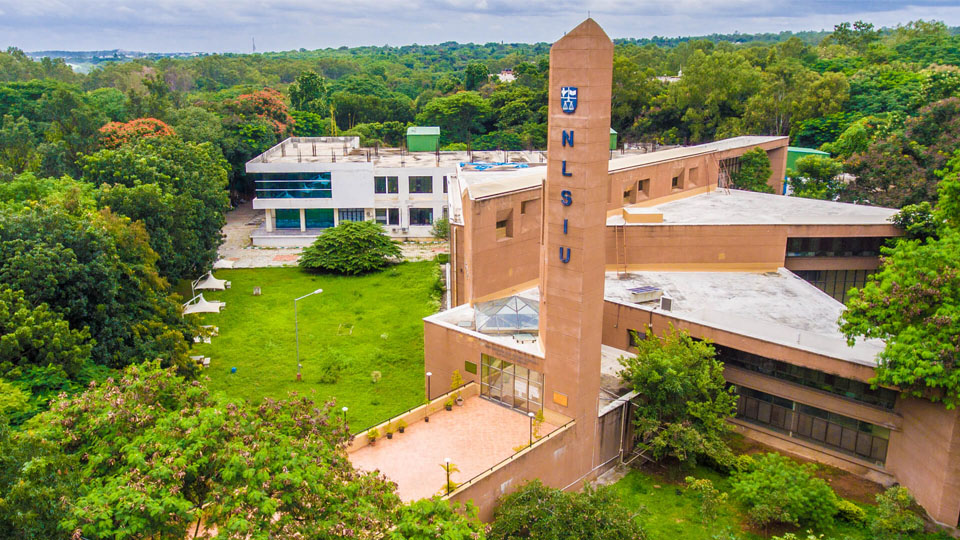
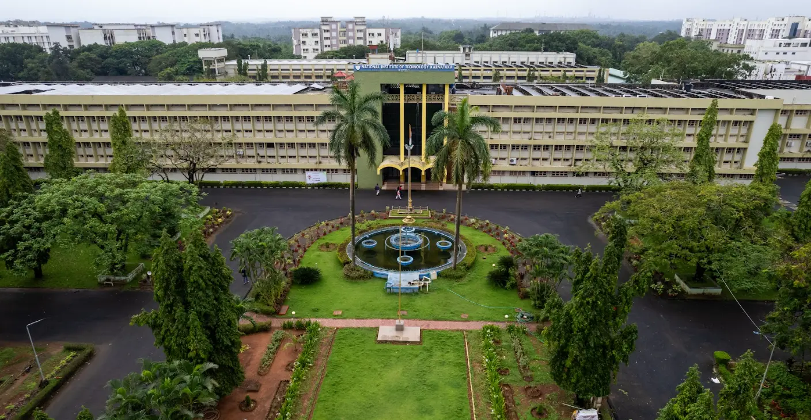

The Pulse of Modern Karnataka
While deeply rooted in history, Karnataka is a forward-looking state that stands at the forefront of India's technological, educational, and cultural revolution. It's a place where ancient traditions and cutting-edge innovations coexist and thrive.
Bengaluru: The Silicon Valley of India
The capital city, Bengaluru, is the heart of India's IT industry. It's a global hub for technology companies, startups, and research institutions, driving innovation in software, biotechnology, and aerospace. This dynamic environment attracts the brightest minds from across the world.
A Hub of Education & Excellence
The state is home to some of India's most prestigious educational and research institutions.
Indian Institute of Science (IISc)
A world-renowned institution for scientific and engineering research. Established in 1909 through the vision of J.N. Tata, IISc is a premier public university for higher education and research in science, engineering, design, and management, consistently ranking as India's #1 university and research institution.
Indian Institutes of Management (IIM-B)
One of the top business schools in the Asia-Pacific region. Known for its rigorous MBA and doctoral programs, world-class faculty, strong industry connections, and focus on holistic, transformative education.

National Law School (NLSIU)
India's premier law university, consistently ranked as the best in the country. Known for its rigorous five-year integrated BA LLB program, esteemed faculty, pioneering reforms in legal education, and consistently securing the top position in national rankings.
National Institute of Technology, Karnataka
Institute of National Importance, offering a wide array of engineering, science, and management programs, known for its excellent placements, research opportunities, and vibrant student life on a lush green campus with its own beach along the Arabian Sea.
Sports, Cinema, and Personalities
- 🏆 Sporting Legends: Karnataka is a powerhouse in Indian sports, producing cricket legends like Rahul Dravid and Anil Kumble, and badminton stars like Prakash Padukone.
- 🎬 Sandalwood's Rise: The Kannada film industry has gained global acclaim with blockbuster hits like the K.G.F. series, known for their grand scale and technical prowess.
- 🌟 National & Global Impact: Beyond IT, Karnataka is home to globally recognized personalities in science and literature, and its startups consistently make headlines on the world stage.